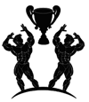
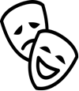

Arnold
Schwarzenegger
Arnold Scwarzenegger
⋅Career⋅
⋅Bodybuilding career⋅
Schwarzenegger is considered among the most important figures in the history of bodybuilding, and his legacy is commemorated in the Arnold Classic annual bodybuilding competition. He has remained a prominent face in bodybuilding long after his retirement, in part because of his ownership of gyms and fitness magazines. He has presided over numerous contests and awards shows. For many years, he wrote a monthly column for the bodybuilding magazines Muscle & Fitness and Flex. Shortly after being elected governor, he was appointed the executive editor of both magazines, in a largely symbolic capacity. The magazines agreed to donate $250,000 a year to the Governor's various physical fitness initiatives. When the deal, including the contract that gave Schwarzenegger at least $1 million a year, was made public in 2005, many criticized it as being a conflict of interest since the governor's office made decisions concerning regulation of dietary supplements in California.
⋅Acting career⋅
Schwarzenegger wanted to move from bodybuilding into acting, finally achieving it when he was chosen to play the role of Hercules in 1970's Hercules in New York. Credited under the stage name "Arnold Strong", his accent in the film was so thick that his lines were dubbed after production. His second film appearance was as a deaf-mute mob hitman in The Long Goodbye (1973), which was followed by a much more significant part in the film Stay Hungry (1976), for which he won the Golden Globe Award for New Star of the Year – Actor. Schwarzenegger has discussed his early struggles in developing his acting career: "It was very difficult for me in the beginning – I was told by agents and casting people that my body was 'too weird', that I had a funny accent, and that my name was too long. You name it, and they told me I had to change it. Basically, everywhere I turned, I was told that I had no chance."
⋅Political career⋅
Schwarzenegger has been a registered Republican for many years. When he was an actor, his political views were always well known as they contrasted with those of many other prominent Hollywood stars, who are generally considered to be a liberal and Democratic-leaning community. At the 2004 Republican National Convention, Schwarzenegger gave a speech and explained he was a Republican because the Democrats of the 1960s sounded too much like Austrian socialists. I finally arrived here in 1968. What a special day it was. I remember I arrived here with empty pockets but full of dreams, full of determination, full of desire. The presidential campaign was in full swing. I remember watching the Nixon–Humphrey presidential race on TV. A friend of mine who spoke German and English translated for me. I heard Humphrey saying things that sounded like socialism, which I had just left.